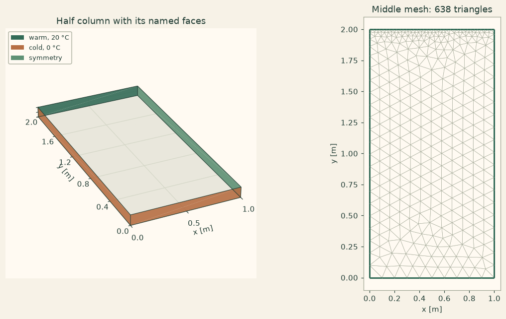

Docs › Examples › Thermal bridge: square column (ISO 10211 case 1)
Building physics · 2D
Thermal bridge: square column (ISO 10211 case 1)
Test reference case 1 of EN ISO 10211: half of a square column with one warm and three cold faces.
Run locally with OneSimulation. The example downloads are free. Running them requires an activated runtime. Runtime Alpha 0.2.1a7 · CPython 3.13 on macOS (Apple Silicon), Ubuntu 22.04 (x86-64), and Windows x64. Installation and activation · View pilot plans. Scope of the reference checks.

What it computes
OneSimulation reads the half column from a STEP file, cuts its mid-plane and solves the steady heat equation with quadratic triangles on three meshes refined towards the singular corners. The script that builds the STEP file comes with the notebook.
What it checks
All 28 temperatures of the standard are met within 0.048 K (0.1 K allowed, the table is rounded to 0.1 K), and the exact Fourier series is matched to 5e-4 K on the finest mesh.
Geometry
The notebook starts at the import of the CAD file thermal_bridge_square_column_iso10211.step: STEP (AP242), readable by any CAD program, with the names of the faces that the boundary conditions use. Put it next to the notebook.


The geometry script
The script thermal_bridge_square_column_iso10211_geometry.py builds the geometry with the CAD objects of OneSimulation and writes the file. Change a dimension there, run it, and run the notebook again.
"""Geometry of the OneSimulation example "Thermal bridge: half of a square column (EN ISO 10211 case 1)".
Builds half of the square column, 1 m wide (x), 2 m high (y) and 0.1 m deep, with the CAD objects of
OneSimulation and writes thermal_bridge_square_column_iso10211.step. The warm top face is named warm,
the external face and the bottom form the group cold, and the cut through the middle of the column is
named symmetry. The example computes on the cross-section z = 0.05 m.
"""
from onesim.cad.d3 import Box
column = Box(length=1.0, width=2.0, height=0.1)
faces = column.boundaries
column = column.grouped(
warm=faces.y_max, cold=faces.x_min | faces.y_min, symmetry=faces.x_max
)
column.save("thermal_bridge_square_column_iso10211.step")The notebook
The complete notebook, cell by cell. Run it to produce the figures and the comparison printout.
EN ISO 10211 (Thermal bridges in building construction - Heat flows and surface temperatures - Detailed calculations) classes a program as a two-dimensional high-precision method only if it reproduces its test reference cases. Case 1 is the one with an exact solution: a square column, 2 m × 2 m, whose top face is held at 20 °C and whose three other faces are held at 0 °C. Because of the symmetry only one half, 1 m wide and 2 m high, is computed:
| face | condition |
|---|---|
warm, top \(y=2\) m | \(\theta=20\) °C |
cold: external face \(x=0\) and bottom \(y=0\) | \(\theta=0\) °C |
symmetry, \(x=1\) m (middle of the column) | adiabatic |
The two top corners, where 20 °C meets 0 °C, are singular; the field must still be accurate everywhere else.
The half column comes from the CAD file thermal_bridge_square_column_iso10211.step; the script thermal_bridge_square_column_iso10211_geometry.py builds it with the CAD objects of OneSimulation. The two-dimensional model is its mid-plane section.
Reference. The standard tabulates the temperature at 28 points of an equidistant grid (\(x=0.25,\dots,1\) m, \(y=0.25,\dots,1.75\) m) and accepts deviations of at most 0.1 K. The table values come from the separation-of-variables solution of the full square,
which the notebook evaluates as a second, more precise reference (Carslaw and Jaeger, Conduction of Heat in Solids, 1959).
import numpy as np
from onesim.cad.exchange import load
from onesim.materials import IsotropicSolid
from onesim.meshing import TriangularMesher
from onesim.numerics import Numerics
from onesim.numerics.fem import FiniteElement, Lagrange
from onesim.numerics.linear import SparseDirect
from onesim.physics.heat_transfer import FixedTemperature, HeatConduction, HeatFlux
from onesim.simulation import Problem, Simulation
from onesim.visualization import plots, theme
theme.set()Geometry and mesh
load returns the half column with its named faces; section returns the mid-plane region, whose sides keep the names of the faces they were cut from. Three triangular meshes halve the cell size from one to the next and are refined along the warm face, where the singular corners are.
column = load("thermal_bridge_square_column_iso10211.step")
faces = column.boundaries
region = column.section((0, 0, 1), origin=(0, 0, column.size[2] / 2))
sides = region.boundaries
sizes = [0.2, 0.1, 0.05]
meshes = [
TriangularMesher(
target_size=size, grading=0.25, local_sizes={"y_max": size / 4}
).generate(region)
for size in sizes
]
fig = plots.figure(1, 2, size=(13, 6.5))
plots.geometry(
column,
selection={
"warm, 20 °C": faces.warm,
"cold, 0 °C": faces.cold,
"symmetry": faces.symmetry,
},
labels=False,
camera=plots.Camera(elevation=30, azimuth=-115),
title="Half column with its named faces",
ax=fig[0],
)
plots.mesh(
meshes[1],
groups=("all",),
legend=False,
title=f"Middle mesh: {meshes[1].cell_count} triangles",
ax=fig[1],
)
plots.show()Model
Quadratic triangles on all three meshes; the temperature is written in °C directly. The warm and the cold faces share the corner \((0,\,2)\); one prescribed temperature on all three faces gives that node 0 °C, the value of the external face.
material = IsotropicSolid(
density=2000.0,
specific_heat_capacity=1000.0,
thermal_conductivity=1.0,
youngs_modulus=1e10,
poisson_ratio=0.2,
thermal_expansion_coefficient=0.0,
)
model = HeatConduction(domain=region.domain(), material=material, heating=0.0)
problem = Problem(
name="ISO 10211 case 1",
geometry=region,
physics=(model,),
boundary_conditions=(
FixedTemperature(
boundary=sides.y_max | sides.x_min | sides.y_min,
physics=model,
value=lambda x, y: np.where(np.isclose(y, 2.0) & (x > 1e-9), 20.0, 0.0),
),
HeatFlux(boundary=sides.x_max, physics=model, value=0.0),
),
)
numerics = Numerics(
spatial=FiniteElement(element=Lagrange(order=2)), linear_solver=SparseDirect()
)
fields = [
Simulation(problem=problem, mesh=mesh, numerics=numerics)
.solve_stationary()
.field(model.temperature)
for mesh in meshes
]Results
The 28 temperatures of the finest mesh against the table of the standard (rows from the top) and the largest deviation on each mesh.
iso = np.array(
[
[9.7, 13.4, 14.7, 15.1],
[5.3, 8.6, 10.3, 10.8],
[3.2, 5.6, 7.0, 7.5],
[2.0, 3.6, 4.7, 5.0],
[1.3, 2.3, 3.0, 3.2],
[0.7, 1.4, 1.8, 1.9],
[0.3, 0.6, 0.8, 0.9],
]
)
X, Y = np.meshgrid([0.25, 0.5, 0.75, 1.0], [1.75, 1.5, 1.25, 1.0, 0.75, 0.5, 0.25])
n = np.arange(1, 400, 2)[:, None]
series = lambda x, y: np.sum(
80
/ (n * np.pi)
* np.sin(n * np.pi * x / 2)
* np.exp(n * np.pi * (y - 2) / 2)
* (1 - np.exp(-n * np.pi * y))
/ (1 - np.exp(-2 * n * np.pi)),
axis=0,
)
grid = [
f.evaluate(np.column_stack((X.ravel(), Y.ravel()))).reshape(X.shape) for f in fields
]
print("y [m] simulation at x = 0.25 / 0.5 / 0.75 / 1.0 m ISO 10211 table")
for row in range(7):
print(
f"{Y[row, 0]:5.2f} "
+ " ".join(f"{v:7.3f}" for v in grid[-1][row])
+ " "
+ " ".join(f"{v:5.1f}" for v in iso[row])
)
for size, mesh, values in zip(sizes, meshes, grid):
print(
f"mesh {size:.2f} m ({mesh.cell_count:5d} triangles): largest deviation from the table {np.abs(values - iso).max():.3f} K "
f"(0.1 K allowed), from the exact series {np.abs(values - series(X.ravel(), Y.ravel()).reshape(X.shape)).max():.1e} K"
)Figure
The temperature field with isotherms, and the temperature along the four grid columns with the table of the standard (markers) and the exact series (dashed).
y = np.linspace(0.02, 1.98, 197)
fig = plots.figure(1, 2, size=(15, 7))
plots.surface(
fields[-1],
limits=(0, 20),
contours=21,
subdivisions=3,
xlabel="x [m]",
ylabel="y [m]",
label="θ [°C]",
title="Temperature in the half column",
ax=fig[0],
)
plots.line(
y={
f"x = {x} m": (
y,
fields[-1].evaluate(np.column_stack((np.full_like(y, x), y))).ravel(),
)
for x in X[0]
},
reference={f"x = {x} m": (y, series(np.full_like(y, x), y)) for x in X[0]},
points={
f"ISO 10211, x = {x} m": (Y[:, column_index], iso[:, column_index])
for column_index, x in enumerate(X[0])
},
xlabel="height y [m]",
ylabel="θ [°C]",
title="Columns: simulation, series (dashed), ISO (markers)",
legend="upper left",
ax=fig[1],
)
plots.show()Going further
EN ISO 10211 case 2 adds four materials and surface resistances; see the composite-structure example. Here, replace the fixed temperatures by surface resistances (ConvectiveHeatFlux), or make the column rectangular in thermal_bridge_square_column_iso10211_geometry.py and change the series accordingly.